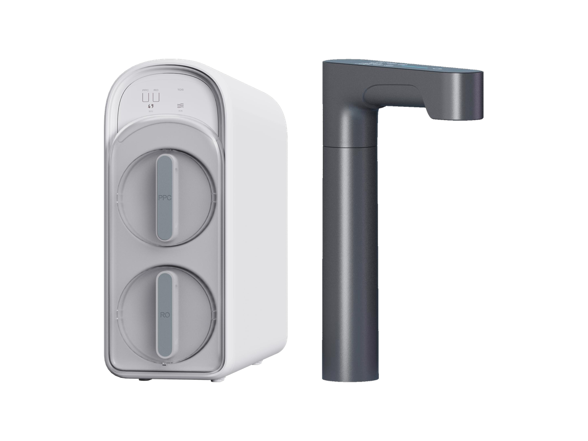
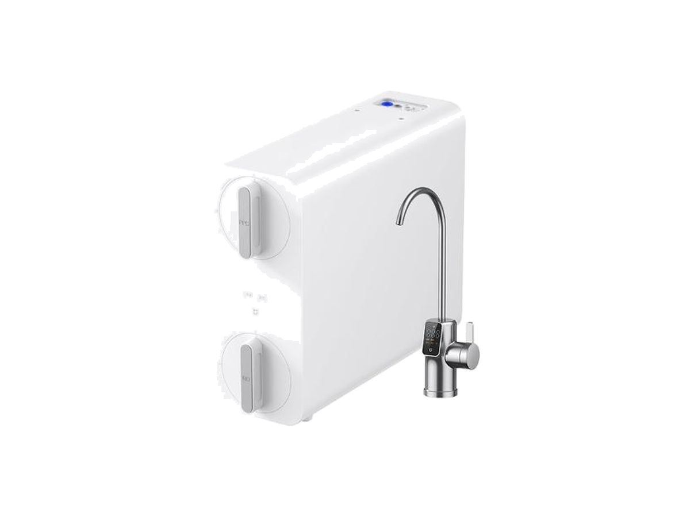
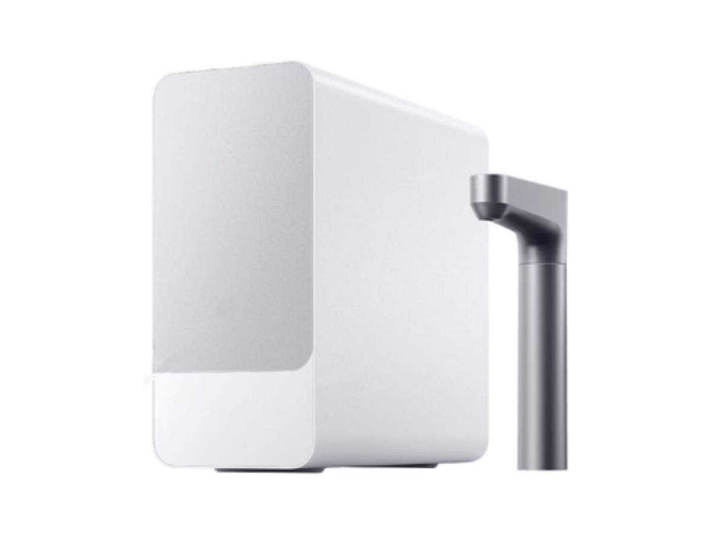

Sous-évier
Sous-évierRP-U07
Purificateur RO sous-évier 400–600 GPD
SKU: RP-U07
MOQ : à confirmer lors de la demande
Accueil/Produits/Systèmes RO sous-évier/ RP-U05

Systèmes RO sous-évier
Plateforme ODM compacte de filtres — RO à deux cartouches (X612)
RP-U05 — Plateforme RO compacte à deux cartouches. Spécification clé: Capacité RO 400 / 600 / 800 / 1000 / 1200 GPD. Les spécifications sont confirmées par modèle et par commande.
La tension / fréquence est configurable selon le pays de destination. Les autres configurations sont confirmées par commande.
RP-U05 est une plateforme RO compacte à deux cartouches (X612) couvrant 400 / 600 / 800 / 1000 / 1200 GPD. Le modèle principal utilise une filtration PPC + RO, a un volume nominal d’eau purifiée de 6000 L et mesure 400 × 130 × 320 mm, avec des options double eau, recirculation et chauffage. Cinq variantes partagent la plateforme à deux cartouches, dont des options de robinet à écran intelligent et de robinet chauffant et une variante à chauffage instantané 1000G — voir Variantes ci-dessous.
Quelle est la quantité minimale de commande ?
La première commande est de 200 unités par modèle, et les réassorts sont de 500 unités.
Puis-je commander un échantillon avant une commande en volume ?
Oui. Les échantillons sont prêts en 15 jours, et les frais d'échantillon sont remboursés sur votre première commande en gros. Les commandes en gros prennent 40 jours après approbation de l'échantillon et sont expédiées FOB Shenzhen.
Comment choisir un niveau de capacité et un robinet ?
Coter comme RP-U05 et préciser la variante. Le modèle principal (X612) couvre 400 / 600 / 800 / 1000 / 1200 GPD ; les variantes 600/800/1000G (X605, X606) comprennent un robinet à écran intelligent, avec une option de robinet chauffant sur X606 ; la variante 800G est MR852-C et la variante à chauffage instantané 1000G est MRH1032.
Cinq options sur la plateforme RP-U05 — coter comme RP-U05 et préciser la variante.
Survolez l'image d'une variante pour voir ses spécifications. Sur écran tactile, touchez une image.




Spécifications complètes de chaque variante, côte à côte. Le tableau de spécifications ci-dessous montre les valeurs de RP-U05.
| Spécification | RP-U05-1 — modèle principal (X612) | RP-U05-2 — Variante 600/800/1000G (X605) | RP-U05-3 — variante 600/800/1000G, option robinet chauffant (X606) | RP-U05-4 — Variante 800G (MR852-C) | RP-U05-5 — variante à chauffage instantané 1000G (MRH1032) |
|---|---|---|---|---|---|
| Capacité RO | 400 / 600 / 800 / 1000 / 1200 GPD | 600/800/1000G | 600/800/1000G | 800G | 1000G |
| Dimensions (L×l×H) | 400 × 130 × 320 mm | 427 × 148 × 346 mm | 466.7 × 150 × 369.3 mm | 427 × 148 × 346 mm | 471 × 198 × 429 mm |
| Cartouches | 2 | 2 | 2 | 2 | 2 |
| Étapes de filtration | À confirmer par commande | 5 étapes | 5 étapes | 5 étapes | 6 étapes |
| Robinet type | À confirmer par commande | Robinet à affichage intelligent | Robinet à affichage intelligent / chauffant | Robinet à affichage intelligent | Robinet chauffant |
| Classe d’efficacité hydrique | À confirmer par commande | Classe 1 | Classe 1 | Classe 1 | Classe 1 |
| Volume nominal d'eau purifiée | 6000 L | À confirmer par commande | À confirmer par commande | À confirmer par commande | À confirmer par commande |
| Volume total nominal d’eau purifiée | À confirmer par commande | 4800 L | 4800 L | 4800 L | 6500 L |
| Tension / fréquence | Configurable selon le pays de destination | Configurable selon le pays de destination | Configurable selon le pays de destination | Configurable selon le pays de destination | Configurable selon le pays de destination |
7 lignes de spécifications du catalogue ROPureOEM.
| Capacité RO | 400 / 600 / 800 / 1000 / 1200 GPD |
|---|---|
| Filtration | PPC + RO |
| Volume nominal d'eau purifiée | 6000 L |
| Dimensions L×W×H | 400 × 130 × 320 mm |
| Options | Double eau / recirculation / chauffage |
| Tension / fréquence | Configurable selon le pays de destination |
| Autres configurations | À confirmer par commande |
Les spécifications sont tirées du catalogue ROPureOEM. Lorsqu'une valeur n'est pas encore confirmée, elle est indiquée comme « Confirmé par commande » — nous ne publions pas de chiffres non confirmés.
Sous-évierPurificateur RO sous-évier 400–600 GPD
SKU: RP-U07
MOQ : à confirmer lors de la demande
 Sous-évier
Sous-évierRO sous-évier à chauffage par accumulation
SKU: RP-U08
MOQ : à confirmer lors de la demande
 Sous-évier
Sous-évierPurificateur RO haute capacité à accès frontal
SKU: RP-U09
MOQ : à confirmer lors de la demande
 Sous-évier
Sous-évierPurificateur RO à trois cartouches
SKU: RP-U11
MOQ : à confirmer lors de la demande